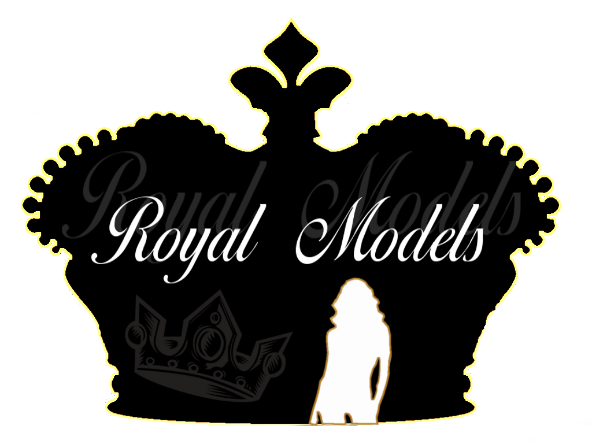

Historia Modelingu
Pierwsze wybiegi dla modelek powstały w XIX-wiecznej Francji. W paryskich salonach couture prezentowano wówczas ówczesne trendy, a pokazy te określano powszechnie mianem „parad mody”. Mogły je przy tym podziwiać jedynie ludzie na znaczących stanowiskach. Pierwszym twórcą ubrań był Anglik, Charles Frederick Worth, uznawany dziś powszechnie za ojca haute couture. W połowie XIX wieku otworzył on pierwszy w historii dom mody z modelkami, pokazami mody i gotowymi kolekcjami, zmieniającymi się co sezon. Tworzył ekskluzywne stroje dla elitarnego grona konsumentek. Tym, co jest charakterystyczne dla modelingu okresu lat 70, szczupłe, aczkolwiek nie wychudzone modelki. Dopiero z czasem projektanci uznali, że ich stroje prezentują się znacznie lepiej na osobach bardzo chudych, tzw. „chodzących wieszakach”. Na wybiegach zaczęły pojawiać się więc coraz młodsze dziewczyny, „nieobciążone” kobiecymi kształtami, o figurach płaskich, wręcz chłopięcych. Z kolei starsze modelki, aby utrzymać się w zawodzie, coraz powszechniej zaczęły stosować restrykcyjne diety, a nawet głodówki. Współcześnie choreografię pokazów przygotowują wykwalifikowani specjaliści; po wybiegu chodzą zawodowe modelki, a głównymi gośćmi, obok bogatych klientek, są gwiazdy, ich styliści, dziennikarze magazynów modowych, oraz fotoreporterzy pism plotkarskich. Dodatkowo pokazy mody bardziej niż kiedykolwiek przypominają obecnie wyrafinowany teatr, niezwykłe widowisko.
